Celiathe frog pond near Pierie's parents' house (from Adam)local radioGabeHouse of Yargatraffic on the bridge over the Schuylkill near Gray's Ferry skate parkJulietoutside the PMA in summertimethe South Philly Meadows
Hi Michael!
from a lot of your friends and Philly, itself, too, on the occasion of you moving away.
When I send you a letter or a card, part of it is usually a collage. It means a lot to me to infuse paper with my affection. So I thought this time, now that I won't have to send you so much mail, I can give you a way to arrange the pieces, yourself. I'm glad you could put your broken heart back together for a second. It can't be a complete picture, but that's for you to know and us to remind you of!
 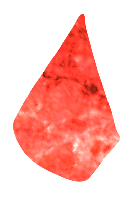
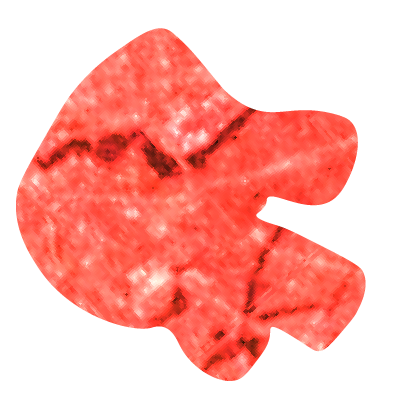
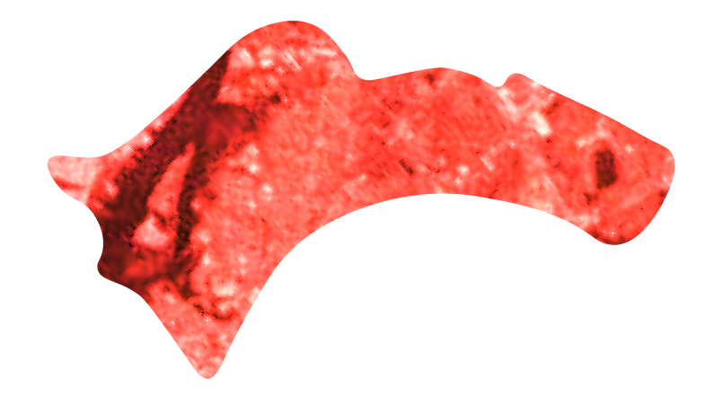
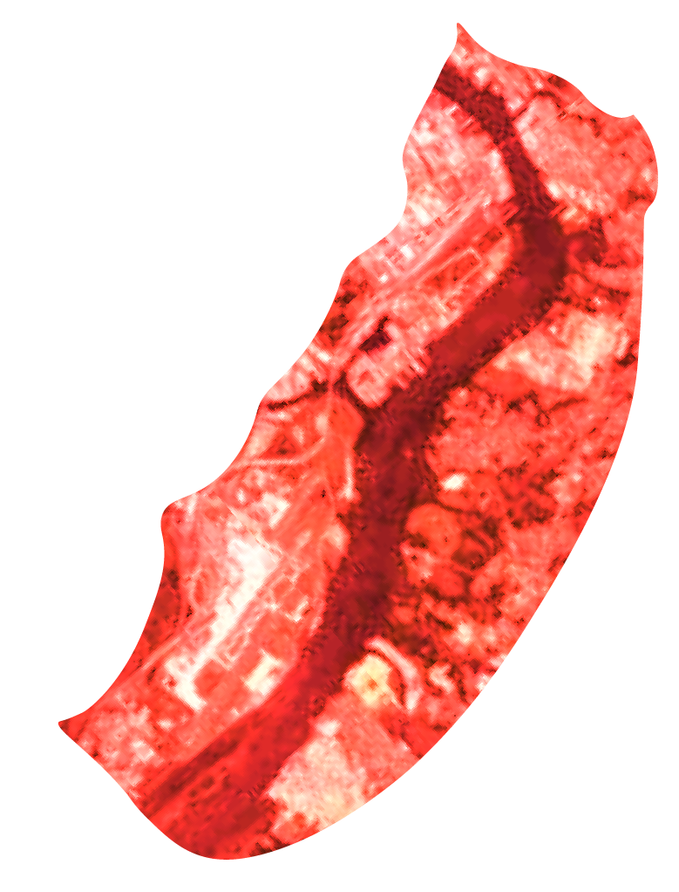
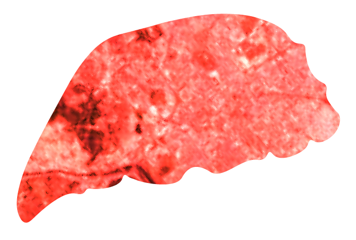
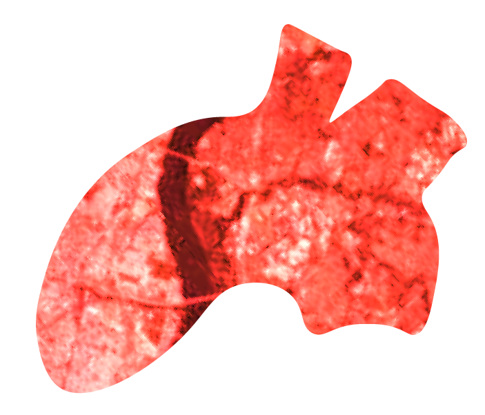
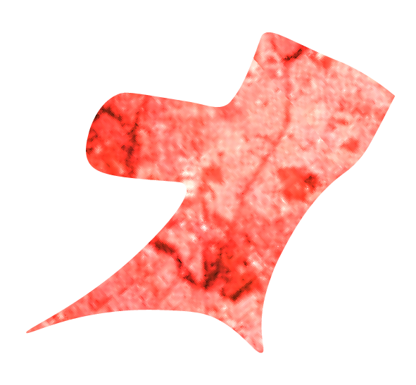
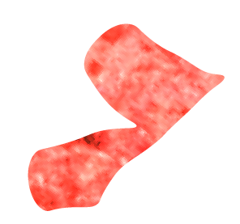
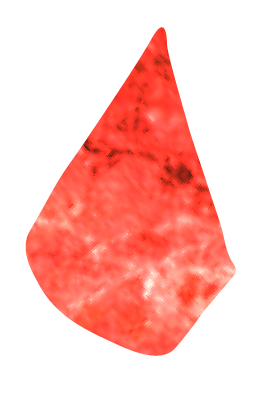
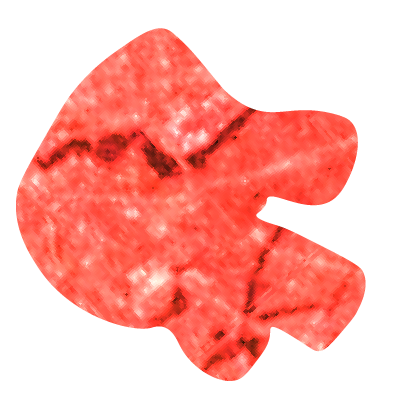
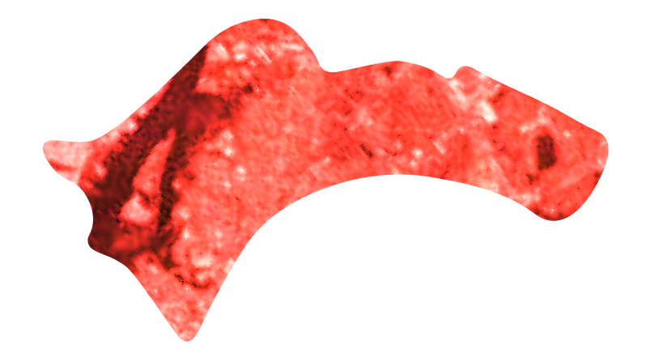
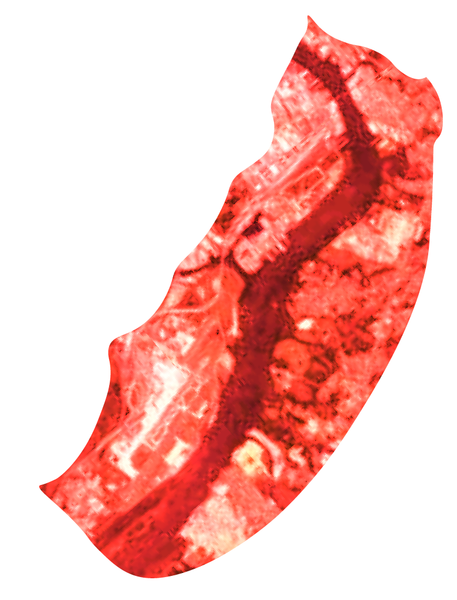
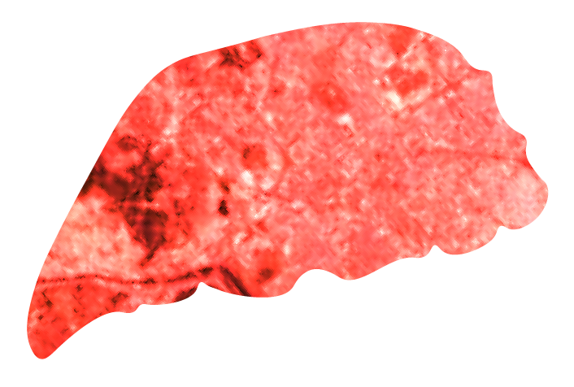
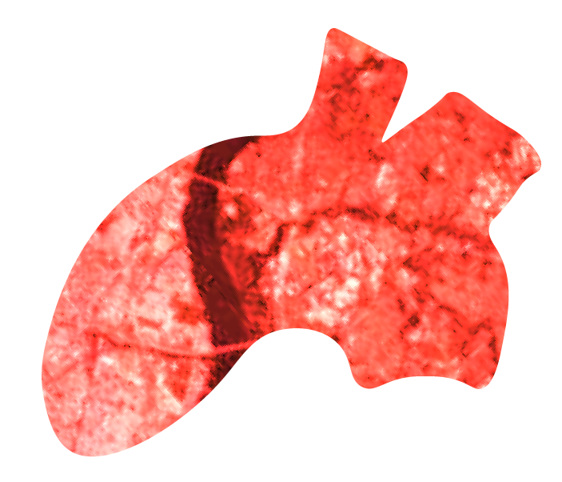
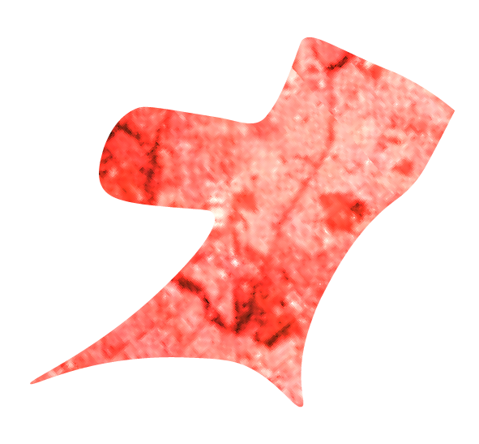
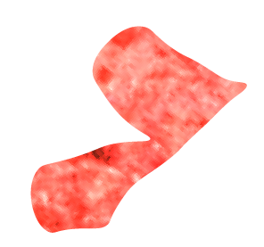